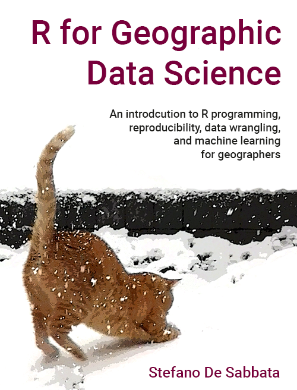

Welcome
This book is an introduction to geographic data science using R,1 which I designed as a companion for the module GY7702 R for Data Science of the MSc in Geographic Information Science at the School of Geography, Geology, and the Environment of the University of Leicester. As such, it is very much a work in progress and currently under revision for the 2022/23 module.
Aims and learning objectives
The materials included in this book have been designed for a module focusing on the programming language R as an effective tool for data science for geographers. R is one of the most widely used programming languages. It provides access to a vast repository of programming libraries, covering all aspects of data science, from data wrangling to statistical analysis, from machine learning to data visualisation. That includes various libraries for processing spatial data, performing geographic information analysis, and creating maps. As such, R is a highly versatile, free and open-source tool in geographic information science, which combines the capabilities of traditional GIS software with the advantages of a scripting language and an interface to a vast array of algorithms.
The materials aim to cover the necessary skills in basic programming, data wrangling and reproducible research to tackle sophisticated but non-spatial data analyses. The first part of the module will focus on core programming techniques, data wrangling and practices for reproducible research. The second part of the module will focus on non-spatial data analysis approaches, including statistical analysis and machine learning.
The book and lecture slides use #FFF0E2 as the background colour to avoid using a pure white background, which can make reading more difficult and slower for people with dyslexia. All colours have also been checked for readability using Colour Contrast Analyser.
License and acknowledgements
This work is licensed under the GNU General Public License v3.0 except where specified. The text is licensed under Creative Commons Attribution-ShareAlike 4.0 International (CC BY-SA 4.0). See the src/images folder for information regarding the images used in the materials. The data used in these materials are derived from data released by the Office for National Statistics, Chris Gale (Office for National Statistics), the ESRC Consumer Data Research Centre, the Ministry of Housing, Communities & Local Government and the UK Data Service, licensed under the Open Government Licence v.3.0; contains National Statistics data Crown copyright and database right 2015; contains Ordnance Survey data Crown copyright and database right 2015 and 2016. See the data folder for further details.
This repository includes teaching materials created by me (Dr Stefano De Sabbata) for the modules GY7702 R for Data Science and GY7708 Geospatial Artificial Intelligence while working at the School of Geography, Geology, and the Environment of the University of Leicester. This project is a direct continuation of my previous granolarr project, in a different presentation format. I would also like to acknowledge the contributions made to parts of these materials by Prof Chris Brunsdon and Prof Lex Comber (see also An Introduction to R for Spatial Analysis and Mapping, Sage, 2015), Dr Marc Padilla, and Dr Nick Tate, who convened previous versions of the module at the University of Leicester, and thank Dr Jörg Kaduk for his contribution on citing code for the chapter on reproducibility.
Last but not least, I would like to acknowledge the myriad of small contributions by users of many platforms, including the Stack Exchange Network (e.g., Stack Overflow, provided under Creative Commons Attribution-Share Alike 2.5 Generic License), who have both asked and answered many of the questions I had while coding this book and all my previous scripts that fed into this book. It would be impossible to trace back all their contributors through the pages, scripts and years, but they are there. The learning materials were created using R, RStudio, RMarkdown and Bookdown (with many thanks to Yihui Xie for those fantastic tools and related documentation), and GitHub.
About me
Hi there, my name is Stef. I am a Associate Professor of Geographical Information Science at the School of Geography, Geology and the Environment and research theme lead for Cultural Informatics at the Institute for Digital Culture of the University of Leicester, and a Research Associate of the Oxford Internet Institute of the University of Oxford.
I am a geographic data scientist working at the intersection between human geography, artificial intelligence and internet studies. Most of my research focuses on three intertwined research streams: the development of machine learning approaches to geographic data analysis, the study of the geographies of content created through internet platforms, and the application of both to quantitative urban geography. I teach data science and programming in R, information visualisation, geospatial databases and information retrieval, digital geographies and geographic information science. I am the Chair of the Geographic Information Science Research Group of the Royal Geographical Society with IBG. I am also part of the steering committee of GIScience Research UK (GISRUK), and I was the chair of the GISRUK 2018 conference. I am a member of the Commission on Location-Based Services of the International Cartographic Association.
Earlier in my career, I worked as a Researcher at the Oxford Internet Institute of the University of Oxford (2013-2015), and I was Junior Research Fellow at the Wolfson College of the University of Oxford (2014-2015). I was awarded a PhD from the Department of Geography of the University of Zurich in 2013 and a BSc and an MSc in computer science from the Department of Mathematics and Computer Science of the University of Udine.
You can find me on Twitter at @maps4thought and on GitHub at sdesabbata.
Reproducibility
Instructor
You can now reproduce R for Geographic Data Science using Docker. First, install Docker on your system, install Git if not already installed, and clone this repository from GitHub. You can then either build the sdesabbata/r-for-geographic-data-science image running the Docker_Build.sh script from the src folder of the repository or pull the latest sdesabbata/r-for-geographic-data-science image from the Docker Hub.
You should now have all the code and the computational environment to reproduce these materials, which can be done by running the script src/Docker_Make.sh (src/Docker_Make_WinPowerShell.sh on Windows using PowerShell). The script will instantiate a Docker container for the sdesabbata/r-for-geographic-data-science image, bind mount the repository folder to the container and execute src/Make.R on the container, clearing and re-making all the materials. The data used in the materials can be re-created from the original open data using the scripts in src/utils, as described in data/README.md.
For instance, in a Unix-based system like Linux or Mac OS, you can reproduce R for Geographic Data Science using the following four commands:
docker pull sdesabbata/r-for-geographic-data-science:latest
git clone https://github.com/sdesabbata/r-for-geographic-data-science.git
cd r-for-geographic-data-science
# follow the instructions in data/README.md before continuing
./src/Docker_Make.shThis approach should allow not simply to use the materials but to easily edit and create your version in the same computational environment. To develop your materials, modify the code in the repository and run the src/Docker_Make.sh from the repository folder again to obtain the updated materials.
The RMarkdown2 code used to create the materials for this book and the lecture slides can be found in the src/book and src/slides folders, respectively. The files are used to generate the Bookdown3 book and xaringan slides. The src/slides folder contains the xaringan templates and styles used in the RMarkdown code.
.
├── data
├── docs
└── slides
└── src
├── book
├── images
├── practicals
├── slides
└── utilsYou can edit the materials in the r-for-geographic-data-science repository folder using RStudio or another editor on your computer and then compile the new materials using Docker. Alternatively, you can follow the learner instructions below to start RStudio Server using Docker and develop your materials in the same environment in which they will be compiled.The first option might be quicker for minor edits, whereas the latter might be preferable for substantial modifications, especially when you need to test your code.
Learner
As a learner, you can use Docker to follow the practical sessions instructions and complete the exercises. First, install Docker on your system, install Git if not already installed, and clone this repository from GitHub.
You can then either build the sdesabbata/r-for-geographic-data-science image running the Docker_Build.sh script from the src folder of the repository or pull the latest sdesabbata/r-for-geographic-data-science image from the Docker Hub. You should now have all the code and the computational environment to reproduce these materials, which can be done by running the script src/Docker_RStudio_Start.sh (src/Docker_RStudio_Start_WinPowerShell.sh on Windows using PowerShell) from the repository folder.
For instance, in a Unix-based system like Linux or Mac OS, you can set up and start the r-for-geographic-data-science container using the following four commands:
docker pull sdesabbata/r-for-geographic-data-science:latest
git clone https://github.com/sdesabbata/r-for-geographic-data-science.git
cd r-for-geographic-data-science
# follow the instructions in data/README.md before continuing
./src/Docker_RStudio_Start.shThe src/Docker_RStudio_Start.sh script will first create a my_r-for-geographic-data-science folder in the parent directory of the root directory of the repository (if it doesn’t exist). The script will then instantiate a Docker container for the sdesabbata/r-for-geographic-data-science image, bind mount the my_r-for-geographic-data-science folder and the r-for-geographic-data-science repository folder to the container and start an RStudio Server.
The script outpur will include a line starting with The password is set to followed by a temporary password that you will need to access the RStudio Server. Copy the temporary password. Using your browser, you can access the RStudio Server running from the Docker container by typing 127.0.0.1:28787 in your address bar and using rstudio as username and the temporary password copied above as password. As the my_r-for-geographic-data-science folder is bound, everything you will save in the my_r-for-geographic-data-science folder in your home directory on RStudio Server will be saved on your computer. Everything else will be lost when the Docker container is stopped.
To stop the Docker container, running the script src/Docker_RStudio_Stop.sh (same on Windows using PowerShell) from the repository folder.
Session info
## R version 4.2.2 (2022-10-31)
## Platform: x86_64-pc-linux-gnu (64-bit)
## Running under: Ubuntu 22.04.1 LTS
##
## Matrix products: default
## BLAS: /usr/lib/x86_64-linux-gnu/openblas-pthread/libblas.so.3
## LAPACK: /usr/lib/x86_64-linux-gnu/openblas-pthread/libopenblasp-r0.3.20.so
##
## locale:
## [1] LC_CTYPE=en_US.UTF-8 LC_NUMERIC=C
## [3] LC_TIME=en_US.UTF-8 LC_COLLATE=en_US.UTF-8
## [5] LC_MONETARY=en_US.UTF-8 LC_MESSAGES=en_US.UTF-8
## [7] LC_PAPER=en_US.UTF-8 LC_NAME=C
## [9] LC_ADDRESS=C LC_TELEPHONE=C
## [11] LC_MEASUREMENT=en_US.UTF-8 LC_IDENTIFICATION=C
##
## attached base packages:
## [1] stats graphics grDevices utils datasets methods base
##
## loaded via a namespace (and not attached):
## [1] bookdown_0.29 withr_2.5.0 digest_0.6.30 R6_2.5.1
## [5] jsonlite_1.8.3 magrittr_2.0.3 evaluate_0.17 stringi_1.7.8
## [9] cachem_1.0.6 rlang_1.0.6 cli_3.4.1 fs_1.5.2
## [13] jquerylib_0.1.4 xml2_1.3.3 bslib_0.4.1 rmarkdown_2.17
## [17] tools_4.2.2 stringr_1.4.1 xfun_0.34 yaml_2.3.6
## [21] fastmap_1.1.0 compiler_4.2.2 memoise_2.0.1 htmltools_0.5.3
## [25] downlit_0.4.2 knitr_1.40 sass_0.4.2by Stefano De Sabbata – text licensed under the CC BY-SA 4.0, contains public sector information licensed under the Open Government Licence v3.0, code licensed under the GNU GPL v3.0.